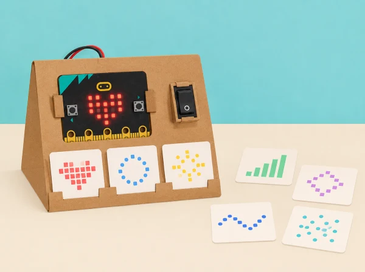

Una classe de tercer cicle treballa el disseny d’un recurs de suport visual que només s’activa quan la persona usuària ho tria. El repte no parteix d’endevinar què necessita algú ni d’imitar una experiència sensorial: l’equip llig un encàrrec fictici validat per la docent (per exemple, “vull veure un senyal lent per saber quan comença una tasca”), compara ajudes existents i dissenya una opció fàcil d’ignorar, canviar o apagar. La matriu 5 × 5 és una eixida visual menuda de prototip; no il·lumina l’aula ni substitueix adaptacions acordades amb la persona i el centre.
La unitat oficial té quatre lliçons per a 11–14 anys i assumeix coneixements previs de pseudocodi i MakeCode. Aquesta versió local conserva l’exploració d’entorns i ajudes, patrons de llum, algoritmes amb entrada/eixida/iteració/selecció i construcció, prova i avaluació; adapta el ritme i l’abast al tercer cicle de primària. No demana a ningú compartir diagnòstic, preferències personals ni experiències de salut.
BBC micro:bit, MakeCode i cable USB, cartó per a un suport que deixe visibles botons i LEDs, targetes de patrons estàtics, pseudocodi, full d’observació de criteris i un temporitzador opcional. Prepareu dos encàrrecs ficticis contrastats amb una persona adulta de suport educatiu o amb material públic d’accessibilitat; no inventeu una “necessitat típica” d’un diagnòstic. Totes les proves es fan primer amb simulador, en una zona de l’aula on la persona que observa pot apartar-se. L’ús en una aula real requereix autorització i acceptació voluntària; el valor pedagògic és el procés de disseny, no l’eficàcia clínica del prototip.
Establiu criteris visibles abans de programar: el recurs roman apagat fins que algú l’activa; ofereix una imatge estàtica o un patró lent sense parpelleig; la persona pot canviar d’opció i deixar-la; el patró acaba o torna a un estat neutre; i hi ha una alternativa en paper. Si un criteri no es pot complir amb la placa, es registra com a límit del prototip.
Guardeu l’encàrrec fictici, mapa d’entorn, comparació d’ajudes, criteris, pseudocodi, diagrama d’estats, codi i resultats esperat/reals de cinc casos. Valoreu si l’equip (1) justifica per què una opció pot respondre a l’encàrrec sense dir que convé a tothom; (2) representa entrada, selecció, eixida i repetició; (3) programa el comportament triat i previsible; (4) prova i depura casos; i (5) comunica una alternativa i un límit. La rúbrica avalua decisions de disseny i funcionament tècnic, no una resposta sensorial “correcta”.
L’ajuda és voluntària, no es registra qui l’ha provada i no es demanen testimonis, diagnòstics ni preferències personals. Ningú no ha de mirar el patró: la prova pot fer-se al simulador, amb una captura estàtica o en paper. No useu flaixos, llums intermitents ni so; oferiu sempre control manual, opció neutra i possibilitat de no usar el dispositiu. Si el centre vol provar un suport en ús real, la decisió ha de comptar amb la persona usuària i el personal responsable, i pot abandonar-se sense justificació. Aquest prototip escolar no es presenta com a teràpia, tractament ni ajust raonable formal.
Sensory classroom té quatre lliçons per a 11–14 anys i assumeix experiència prèvia amb algoritmes/MakeCode. La primera explora entorns d’aprenentatge i avalua ajudes; la segona escriu pseudocodi amb iteració i patrons de llum; la tercera planifica una ajuda visual amb entrades, eixides, iteració i selecció; la quarta programa, prova, depura i avalua el disseny. Aquesta adaptació manté la progressió i els objectius, incorpora criteris d’ús voluntari, casos de prova i alternativa impresa i redueix l’abast tecnològic al micro:bit. No reutilitza materials visuals oficials.